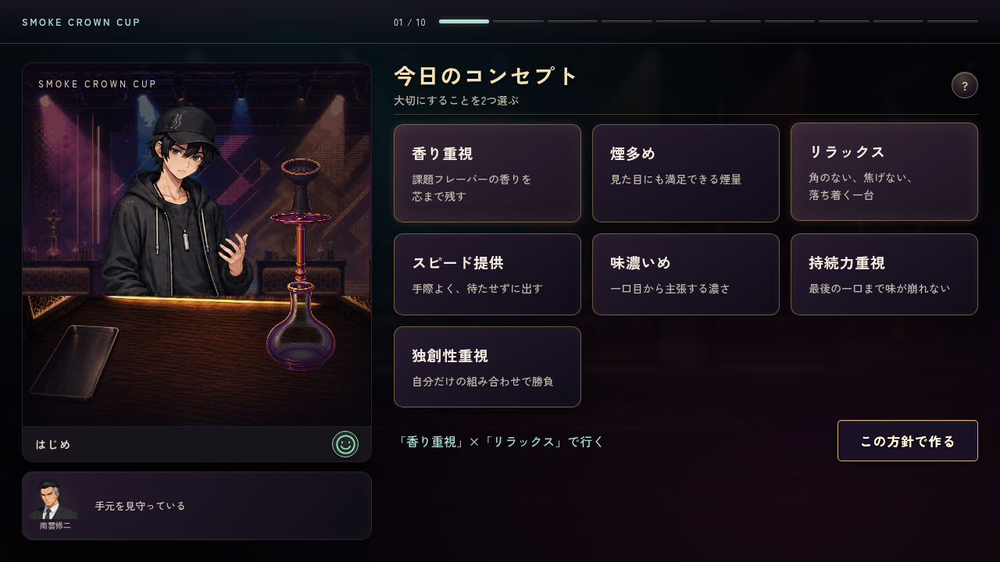
01 コンセプト選択香り重視・リラックスの2つを選んだ画面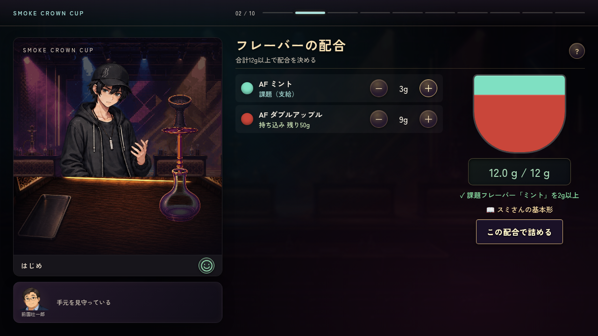
02 フレーバー配合グラム数・ボウル内の配合表示・課題フレーバー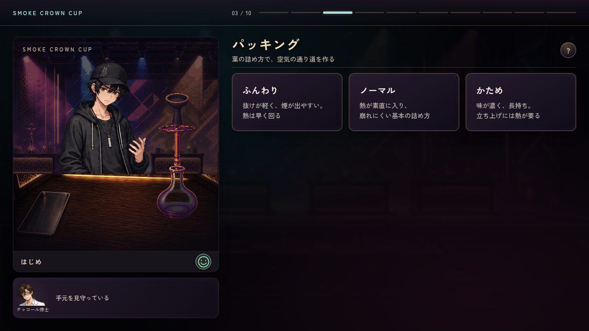
03 パッキングふんわり・ノーマル・かための選択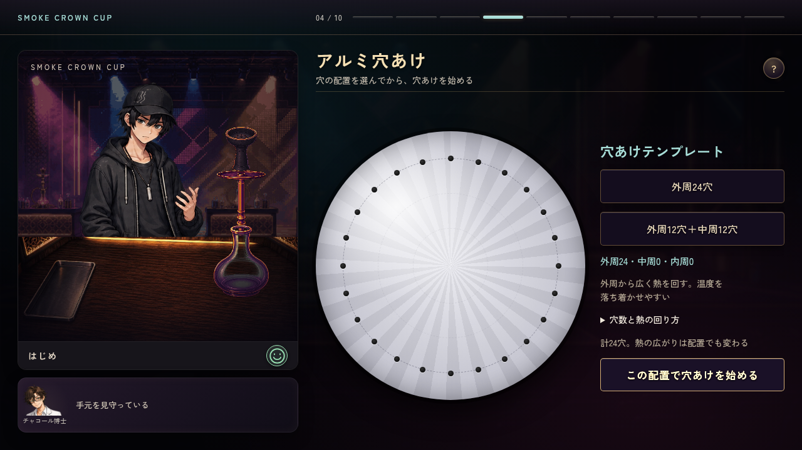
04 外周24穴のテンプレート穴の配置プレビューと熱への説明05 外周12＋中周12穴のテンプレート2周の配置プレビューと熱への説明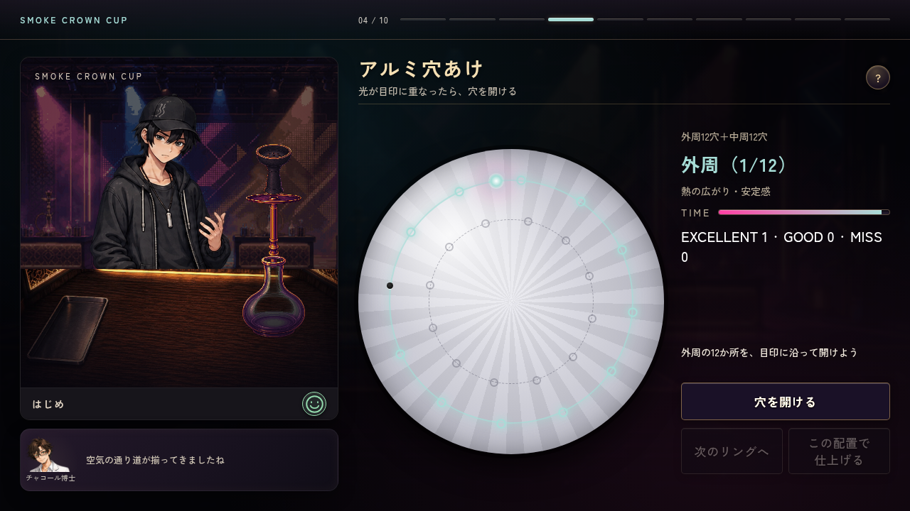
06 穴あけゲーム円周を動く光・穴の目印・残り時間・穴数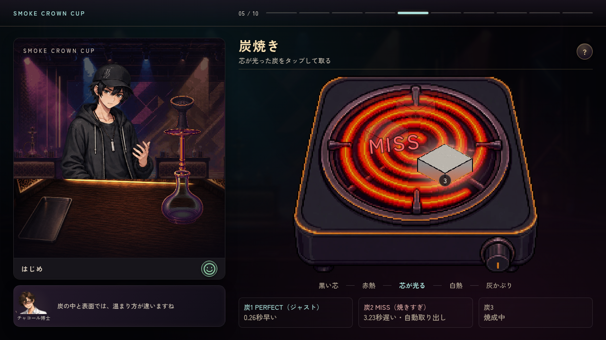
07 炭焼き中炭の焼け方と、取り出した炭の秒数誤差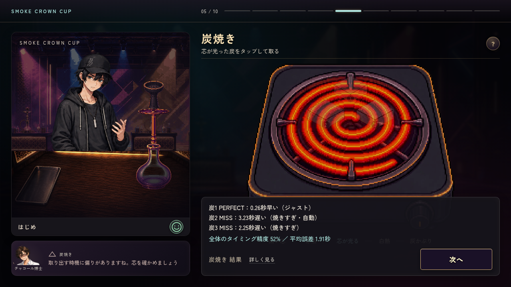
08 炭焼き結果3個それぞれの評価・誤差と全体のタイミング精度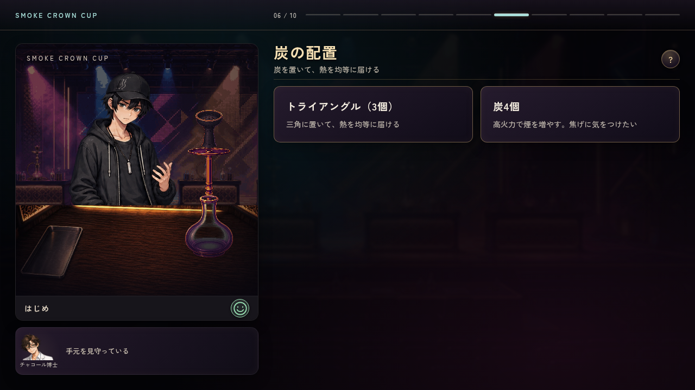
09 炭の配置トライアングル・炭4個の選択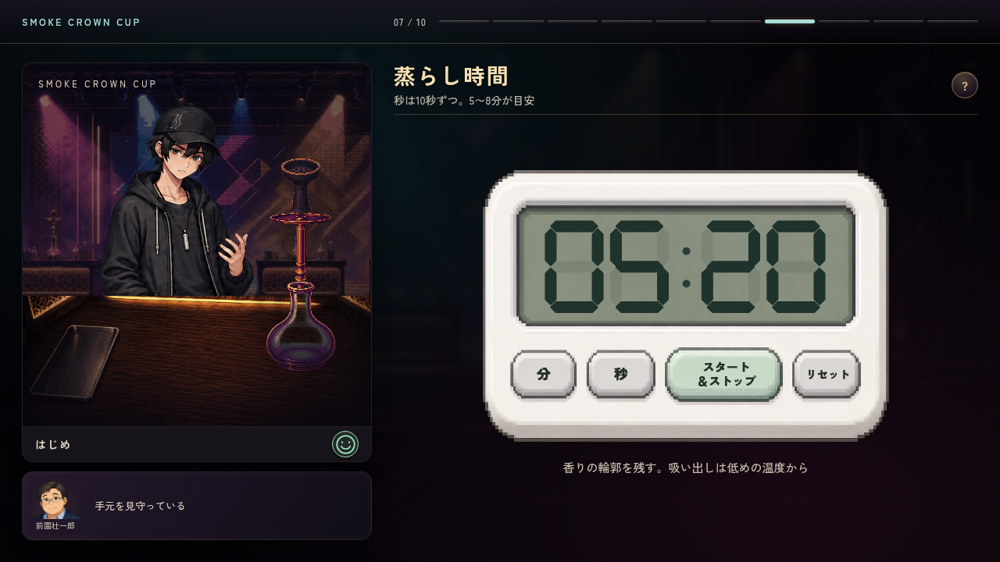
10 蒸らし時間設定キッチンタイマーを5分20秒に設定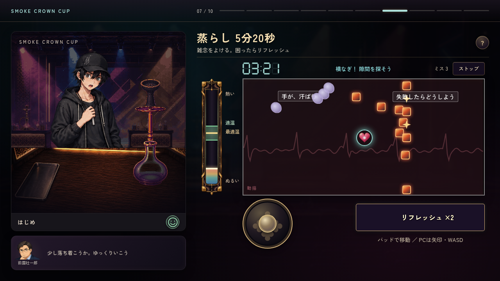
11 蒸らし・雑念弾幕温度計・タイマー・心拍線・移動パッド・リフレッシュ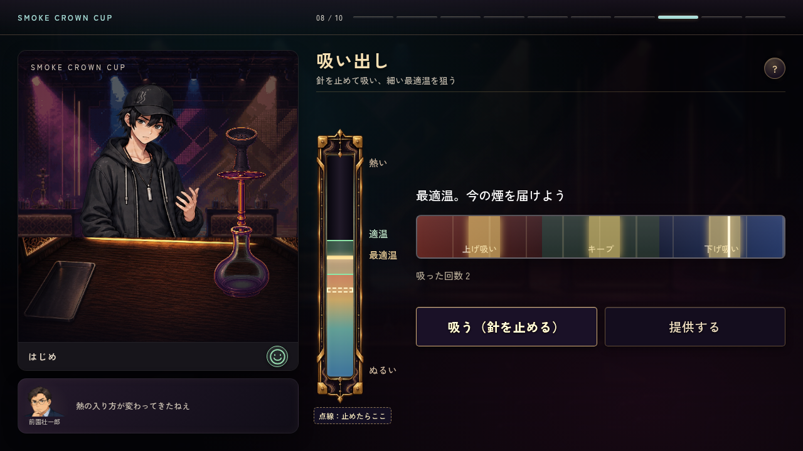
12 吸い出し温度計・最適温・上げ吸い／キープ／下げ吸いのゲージ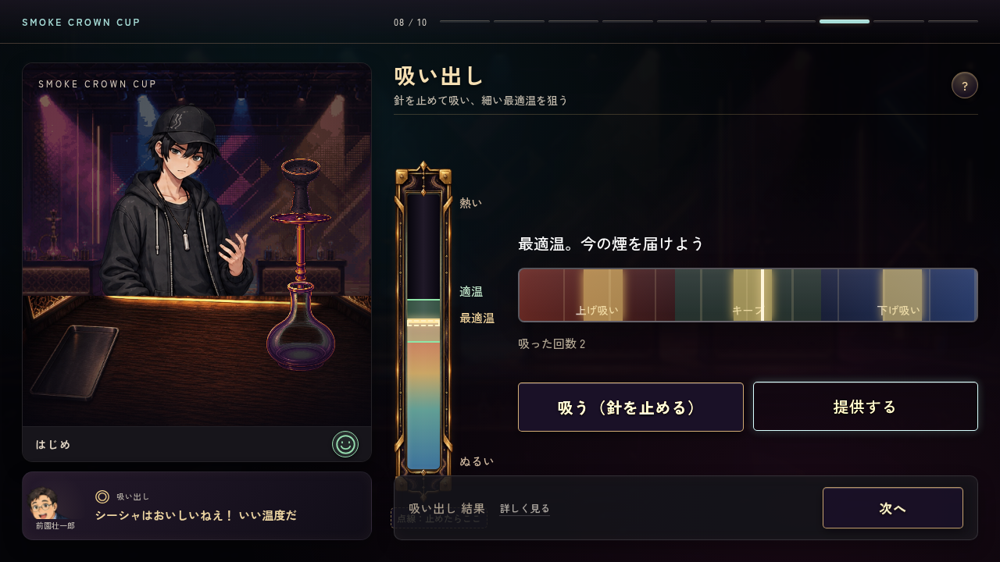
13 吸い出し結果提供後の工程評価とコメント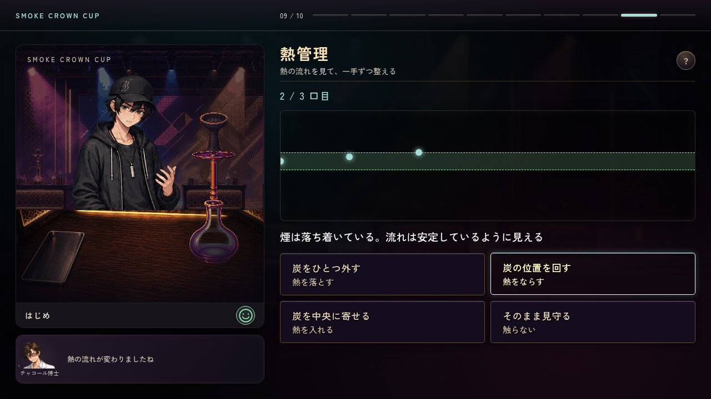
14 提供後の熱管理熱の履歴グラフと炭を外す／回す／寄せる／見守る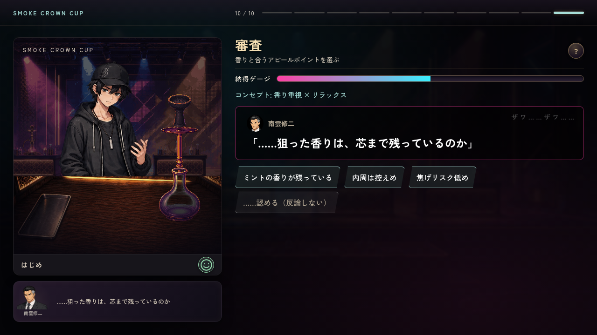
15 審査・FLAVOR TRIAL納得ゲージ・審査員の問い・アピールポイント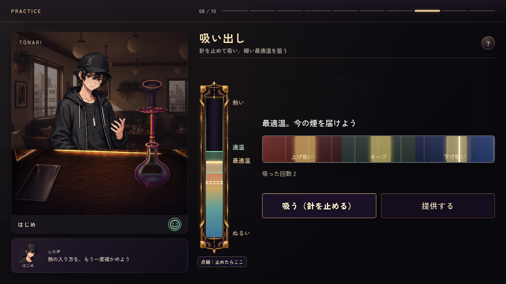
16 自主練の吸い出し同じゲージに、左下ははじめの心の声